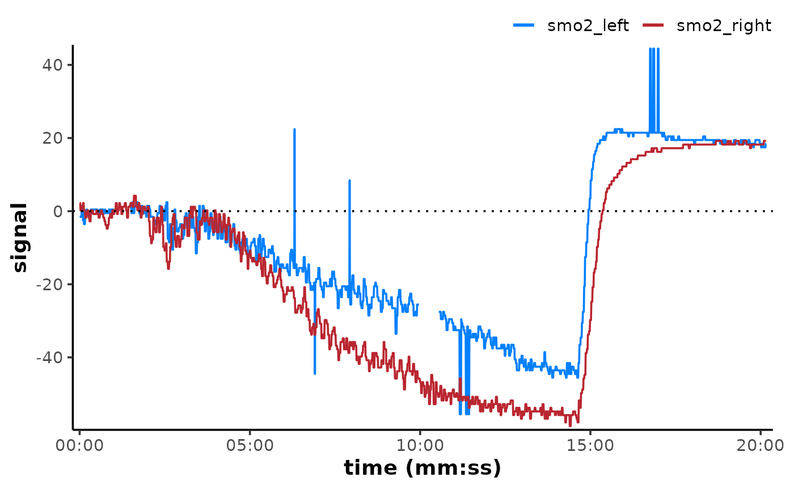

Move the range of data channels in a data frame up or down, while preserving the absolute amplitude/dynamic range of each channel, and the relative scaling across channels. e.g. shift the minimum data value to zero for all positive values, or shift the mean of the first time span in a recording to zero.
Arguments
- data
A data frame of class "mnirs" containing at least one column with numeric time or sample values, and one column with numeric mNIRS values, along with metadata.
- nirs_channels
A
list()of character vectors indicating the column names for data channels to be shifted (see Details).list("A", "B", "C")Will shift each channel independently, losing the relative scaling between channels.
list(c("A", "B", "C"))Will shift all channels together, preserving the relative scaling between channels.
list(c("A", "B"), c("C", "D"))Will shift channels
AandBin one group, and channelsCandDin another group, preserving relative scaling within, but not between groups.
Must match column names in data exactly. Will be taken from metadata if not defined explicitly.
- time_channel
A character string indicating the time or sample channel name. Must match column names in
dataexactly. Will be taken from metadata if not defined explicitly.- to
A numeric value in units of
nirs_channelsto which the data channels will be shifted, e.g. shift the minimum value to zero.- by
A numeric value in units of
nirs_channelsby which the data channels will be shifted, e.g. shift all values up by 10 units.- width
An integer defining the local window in number of samples around
idxin which to perform the operation., between[idx - floor(width/2), idx + floor(width/2)].- span
A numeric value defining the local window timespan around
idxin which to perform the operation. In units oftime_channelort, between[t - span/2, t + span/2].- position
Indicates where the reference values will be shifted from.
"min"(The default) will shift the minimum value(s)
toorbythe specified value."max"Will shift the maximum value(s)
toorbythe specified values."first"Will shift first value(s)
toorbythe specified values.
- verbose
A logical to return (the default) or silence warnings and messages which can be used for data error checking. Abort errors will always be returned.
Value
A tibble of class "mnirs" with metadata
available with attributes().
Details
nirs_channels = list() can be used to group data channels to preserve
absolute or relative scaling.
Channels grouped together in a list item will be shifted to a common value, and the relative scaling within that group will be preserved.
Channels grouped in separate list items will be shifted independently, and relative scaling between groups will be lost.
Channels (columns) in
datanot explicitly defined innirs_channelswill be passed through untouched to the output data frame.
nirs_channels and time_channel can be retrieved automatically from
data of class "mnirs" which has been processed with {mnirs},
if not defined explicitly. This will default to returning all
nirs_channels grouped together, and should be defined explicitly
for other grouping arrangements.
Only one of either to or by and one of either width or span should
be defined. If both of either pairing are defined, to will be preferred
over by, and width will be preferred over span.
Examples
library(ggplot2)
## read example data
data_shifted <- read_mnirs(
file_path = example_mnirs("moxy_ramp"),
nirs_channels = c(smo2 = "SmO2 Live"),
time_channel = c(time = "hh:mm:ss"),
verbose = FALSE
) |>
resample_mnirs(verbose = FALSE) |>
replace_mnirs(
invalid_values = c(0, 100),
outlier_cutoff = 3,
width = 10,
verbose = FALSE
) |>
filter_mnirs(na.rm = TRUE, verbose = FALSE) |>
shift_mnirs(
to = 0, ## NIRS values will be shifted to zero
span = 120, ## shift the first 120 sec of data to zero
position = "first",
verbose = FALSE
)
plot(data_shifted, label_time = TRUE) +
geom_hline(yintercept = 0, linetype = "dotted")
